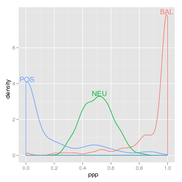

The idea is very simple. You just made a figure where you drew a bunch of lines or points in different colors, according to some categorical variable. Now when you look at the figure, how do you figure out which color corresponds to which value of that variable?
In most statistical packages the answer to this question is given by a legend or key that you have to decode. Legends can be at best, hard to decode, or at worst, downright confusing. Here is a very confusing example that motivates the use of direct labeling:
library(lattice)
loci <- data.frame(ppp=c(rbeta(800,10,10),rbeta(100,0.15,1),rbeta(100,1,0.15)),
type=factor(c(rep("NEU",800),rep("POS",100),rep("BAL",100))))
densityplot(~ppp,loci,groups=type,auto.key=list(space="top",columns=3))
Look closely. Is the curve for BAL on the left or right? One way to fix this possible decoding problem would be by putting the label right next to the colored lines. Then we would be using the data for label positioning, which is inherently more intuitive and obvious to decode.
"But," you say, "lattice and ggplot2 make it so easy to make these legends! Direct labeling is a lot of tedious work! I can live with these confusing legends!"
Don't live with these confusing legends any more! To add direct labels, just put direct.label() around your plot:
library(directlabels) direct.label(densityplot(~ppp,loci,groups=type,n=500)) direct.label(qplot(ppp,data=loci,colour=type,geom="density"))
|
 |
It couldn't be easier, and the clarity of the results is often dramatic.
There are 2 major reasons why the directlabels package is so useful:
loci <- data.frame(ppp=c(rbeta(800,10,10),rbeta(100,0.15,1),rbeta(100,1,0.15)),
type=factor(c(rep("NEU",800),rep("POS",100),rep("BAL",100))))
|
Here's how we would go about making this plot in lattice without help from the directlabels package:
library(lattice)
## unlabeled lattice plot
dp <- densityplot(~ppp,loci,groups=type,n=500)
## we will add direct labels using this panel.groups function
label.densityplot <- function(x,group.number,col.line,...){
panel.densityplot(x=x,group.number=group.number,col.line=col.line,...)
d <- density(x)
i <- which.max(d$y)
ltext(d$x[i],d$y[i],levels(loci$type)[group.number],adj=c(0.5,0),col=col.line)
}
## update the lattice plot with the new panel.groups function
update(dp,panel=panel.superpose,panel.groups=label.densityplot)
As you can see, this is rather difficult using just plain lattice functions. It is also rather difficult in ggplot2:
library(ggplot2)
library(plyr)
## ggplot2 with usual legend
dp <- qplot(ppp,data=loci,colour=type,geom="density")
## first we need to create a data frame of direct label positions
dens <- ddply(loci,.(type),function(l)
subset(data.frame(density(l$ppp)[c("x","y")]),y==max(y)))
## add the direct labels and hide the legend
dp+geom_text(aes(x,y,label=type,vjust=0),dens)+opts(legend.position="none")
The directlabels package greatly simplifies the code necessary for direct labeling. And it works the same with both lattice and ggplot2, try it! Several different (but equivalent) positioning methods are shown, in order to give you a better feel about how the system works. Each of the following will create the same direct labeled plot above.
install.packages("directlabels", repos="http://R-Forge.R-project.org")
library(directlabels)
## The simplest kind of Positioning Method is just a function
## of the data points that returns the label positions.
direct.label(dp,function(d,...)transform(gapply(d,subset,y==max(y)),vjust=0))
## The built-in top.points Positioning Method does exactly this
direct.label(dp,"top.points")
## The default for density plots is similar, and prevents label overlap
direct.label(dp)
data(BodyWeight,package="nlme")
library(lattice)
lp <- xyplot(weight~Time|Diet,BodyWeight,groups=Rat,type="l",layout=c(3,1))
label.lineplot <- function(x,y,group.number,col.line,...){
panel.xyplot(x=x,y=y,group.number=group.number,col.line=col.line,...)
i <- which.min(x)
ltext(x[i],y[i],levels(BodyWeight$Rat)[group.number],
adj=c(1,0.5),col=col.line)
}
update(lp,panel=panel.superpose,panel.groups=label.lineplot)
Using lattice to plot these data with direct labels is tiresome, since you have to construct a custom panel.groups function.
Adding direct labels by hand in ggplot2 also tiresome, since you have to construct a data.frame for the labels:
lp <- qplot(Time,weight,data=BodyWeight,colour=Rat,geom="line",facets=.~Diet) ratlabs <- ddply(BodyWeight,.(Rat),function(d)d[which.min(d$Time),]) lp+ geom_text(aes(label=Rat),hjust=1,data=ratlabs)+ opts(legend.position="none")
The directlabels package offers an interface that is simpler and uniform between lattice and ggplot2. Any of the following lines of code make the same direct labeled figure:
install.packages("directlabels", repos="http://R-Forge.R-project.org")
library(directlabels)
## You can use any function that will return the label positions
direct.label(lp,function(d,...)transform(gapply(d,subset,x==min(x)),hjust=1))
## first.points is a Positioning Method that comes with the directlabels package
direct.label(lp,"first.points")
## You can avoid label collisions using first.qp
direct.label(lp,"first.qp")
## The default Positioning Method for lineplots is similar
direct.label(lp)
Using the direct.label function is significantly simpler than doing it by hand using lattice or ggplot2. Instead of several lines of code, you can almost always add your direct labels using just 1 line! Furthermore, the directlabels package includes sophisticated Positioning Methods that you can use for everyday plots.
Back to directlabels home.
| Please send email to Toby Dylan Hocking if you are using directlabels or have ideas to contribute, thanks! |
| validate |